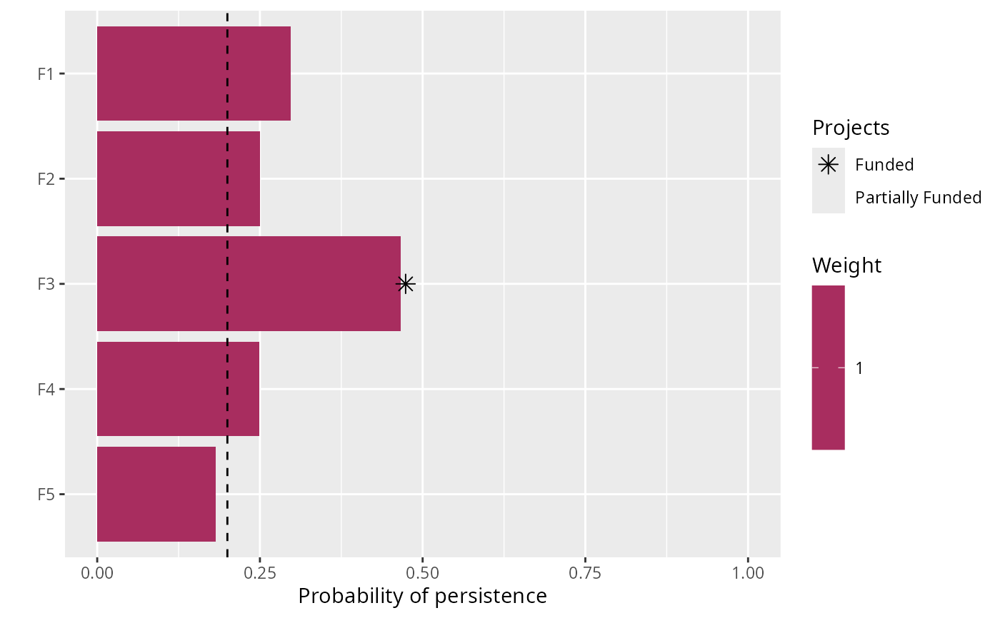
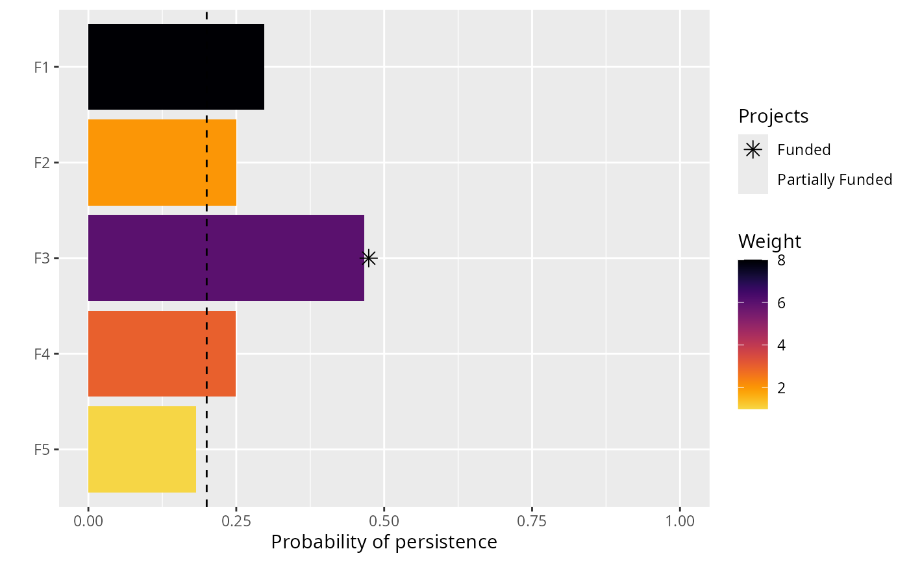

R/add_max_targets_met_objective.R
add_max_targets_met_objective.RdSet the objective of a project prioritization problem() to
maximize the total number of persistence targets met for the features, whilst
ensuring that the cost of the solution is within a pre-specified budget
(Chades et al. 2015). In some project prioritization exercises,
decision makers may have a target level of persistence for each feature
(e.g. a 90% persistence target corresponding to a 90% chance for the
features persisting into the future). In such exercises, the decision makers
do not perceive any benefit when a target is not met (e.g. if a feature
has a persistence target of 90% and a solution only secures a 70% chance
of persistence then no benefit is accrued for that feature) or when a target
is surpassed (e.g. if a feature has a persistence target of 50%, then a
solution which
secures a 95% chance of persistence will accrue the same benefit as a
solution which secures a 50% chance of persistence). Furthermore, weights
can also be used to specify the relative importance of meeting targets
for specific features (see add_feature_weights()).
add_max_targets_met_objective(x, budget)ProjectProblem object.
numeric budget for funding actions.
ProjectProblem object with the objective added to it.
A problem objective is used to specify the overall goal of the project prioritization problem. Here, the maximum targets met objective seeks to find the set of actions that maximizes the total number of features (e.g. populations, species, ecosystems) that have met their persistence targets within a pre-specified budget. Let \(I\) represent the set of conservation actions (indexed by \(i\)). Let \(C_i\) denote the cost for funding action \(i\), and let \(m\) denote the maximum expenditure (i.e. the budget). Also, let \(F\) represent each feature (indexed by \(f\)), \(W_f\) represent the weight for each feature \(f\) (defaults to one for each feature unless specified otherwise), \(T_f\) represent the persistence target for each feature \(f\), and \(E_f\) denote the probability that each feature will go extinct given the funded conservation projects.
To guide the prioritization, the conservation actions are organized into
conservation projects. Let \(J\) denote the set of conservation projects
(indexed by \(j\)), and let \(A_{ij}\) denote which actions
\(i \in I\) comprise each conservation project
\(j \in J\) using zeros and ones. Next, let \(P_j\) represent
the probability of project \(j\) being successful if it is funded. Also,
let \(B_{fj}\) denote the enhanced probability that each feature
\(f \in F\) associated with the project \(j \in J\)
will persist if all of the actions that comprise project \(j\) are funded
and that project is allocated to feature \(f\).
For convenience,
let \(Q_{fj}\) denote the actual probability that each
\(f \in F\) associated with the project \(j \in J\)
is expected to persist if the project is funded. If the argument
to adjust_for_baseline in the problem function was set to
TRUE, and this is the default behavior, then
\(Q_{fj} = (P_{j} \times B_{fj}) + \bigg(\big(1 - (P_{j} B_{fj})\big)
\times (P_{n} \times B_{fn})\bigg)\), where n corresponds to the
baseline "do nothing" project. This means that the probability
of a feature persisting if a project is allocated to a feature
depends on (i) the probability of the project succeeding, (ii) the
probability of the feature persisting if the project does not fail,
and (iii) the probability of the feature persisting even if the project
fails. Otherwise, if the argument is set to FALSE, then
\(Q_{fj} = P_{j} \times B_{fj}\).
The binary control variables \(X_i\) in this problem indicate whether each project \(i \in I\) is funded or not. The decision variables in this problem are the \(Y_{j}\), \(Z_{fj}\), \(E_f\), and \(G_f\) variables. Specifically, the binary \(Y_{j}\) variables indicate if project \(j\) is funded or not based on which actions are funded; the binary \(Z_{fj}\) variables indicate if project \(j\) is used to manage feature \(f\) or not; the semi-continuous \(E_f\) variables denote the probability that feature \(f\) will go extinct; and the \(G_f\) variables indicate if the persistence target for feature \(f\) is met.
Now that we have defined all the data and variables, we can formulate the problem. For convenience, let the symbol used to denote each set also represent its cardinality (e.g. if there are ten features, let \(F\) represent the set of ten features and also the number ten).
$$ \mathrm{Maximize} \space \sum_{f = 0}^{F} G_f W_f \space \mathrm{(eqn \space 1a)} \\ \mathrm{Subject \space to} \sum_{i = 0}^{I} C_i \leq m \space \mathrm{(eqn \space 1b)} \\ G_f (1 - E_f) \geq T_f \space \forall \space f \in F \space \mathrm{(eqn \space 1c)} \\ E_f = 1 - \sum_{j = 0}^{J} Z_{fj} Q_{fj} \space \forall \space f \in F \space \mathrm{(eqn \space 1d)} \\ Z_{fj} \leq Y_{j} \space \forall \space j \in J \space \mathrm{(eqn \space 1e)} \\ \sum_{j = 0}^{J} Z_{fj} \times \mathrm{ceil}(Q_{fj}) = 1 \space \forall \space f \in F \space \mathrm{(eqn \space 1f)} \\ A_{ij} Y_{j} \leq X_{i} \space \forall \space i \in I, j \in J \space \mathrm{(eqn \space 1g)} \\ E_{f} \geq 0, E_{f} \leq 1 \space \forall \space b \in B \space \mathrm{(eqn \space 1h)} \\ G_{f}, X_{i}, Y_{j}, Z_{fj} \in [0, 1] \space \forall \space i \in I, j \in J, f \in F \space \mathrm{(eqn \space 1i)} $$
The objective (eqn 1a) is to maximize the weighted total number of the features that have their persistence targets met. Constraints (eqn 1b) calculate which persistence targets have been met. Constraint (eqn 1c) limits the maximum expenditure (i.e. ensures that the cost of the funded actions do not exceed the budget). Constraints (eqn 1d) calculate the probability that each feature will go extinct according to their allocated project. Constraints (eqn 1e) ensure that feature can only be allocated to projects that have all of their actions funded. Constraints (eqn 1f) state that each feature can only be allocated to a single project. Constraints (eqn 1g) ensure that a project cannot be funded unless all of its actions are funded. Constraints (eqns 1h) ensure that the probability variables (\(E_f\)) are bounded between zero and one. Constraints (eqns 1i) ensure that the target met (\(G_f\)), action funding (\(X_i\)), project funding (\(Y_j\)), and project allocation (\(Z_{fj}\)) variables are binary.
Chades I, Nicol S, van Leeuwen S, Walters B, Firn J, Reeson A, Martin TG & Carwardine J (2015) Benefits of integrating complementarity into priority threat management. Conservation Biology, 29, 525--536.
# load the ggplot2 R package to customize plot
library(ggplot2)
# load data
data(sim_projects, sim_features, sim_actions)
# manually adjust feature weights
sim_features$weight <- c(8, 2, 6, 3, 1)
# build problem with maximum targets met objective, a $200 budget,
# targets that require each feature to have a 20% chance of persisting into
# the future, and zero cost actions locked in
p1 <- problem(sim_projects, sim_actions, sim_features,
"name", "success", "name", "cost", "name") %>%
add_max_targets_met_objective(budget = 200) %>%
add_absolute_targets(0.2) %>%
add_locked_in_constraints(which(sim_actions$cost < 1e-5)) %>%
add_binary_decisions()
# \dontrun{
# solve problem
s1 <- solve(p1)
#> Set parameter Username
#> Set parameter TimeLimit to value 2147483647
#> Set parameter MIPGap to value 0
#> Set parameter NumericFocus to value 3
#> Set parameter Presolve to value 2
#> Set parameter Threads to value 1
#> Set parameter PoolSolutions to value 1
#> Set parameter PoolSearchMode to value 2
#> Academic license - for non-commercial use only - expires 2025-04-21
#> Gurobi Optimizer version 11.0.2 build v11.0.2rc0 (linux64 - "Ubuntu 22.04.4 LTS")
#>
#> CPU model: 11th Gen Intel(R) Core(TM) i7-1185G7 @ 3.00GHz, instruction set [SSE2|AVX|AVX2|AVX512]
#> Thread count: 4 physical cores, 8 logical processors, using up to 1 threads
#>
#> Optimize a model with 47 rows, 47 columns and 102 nonzeros
#> Model fingerprint: 0x00731be5
#> Variable types: 0 continuous, 47 integer (47 binary)
#> Coefficient statistics:
#> Matrix range [9e-02, 1e+02]
#> Objective range [1e+00, 1e+00]
#> Bounds range [1e+00, 1e+00]
#> RHS range [1e+00, 2e+02]
#> Found heuristic solution: objective 3.0000000
#> Presolve removed 14 rows and 7 columns
#> Presolve time: 0.00s
#> Presolved: 33 rows, 40 columns, 69 nonzeros
#> Variable types: 0 continuous, 40 integer (40 binary)
#> Root relaxation presolved: 33 rows, 40 columns, 69 nonzeros
#>
#>
#> Root relaxation: objective 4.961414e+00, 7 iterations, 0.00 seconds (0.00 work units)
#>
#> Nodes | Current Node | Objective Bounds | Work
#> Expl Unexpl | Obj Depth IntInf | Incumbent BestBd Gap | It/Node Time
#>
#> 0 0 4.96141 0 4 3.00000 4.96141 65.4% - 0s
#> H 0 0 4.0000000 4.96013 24.0% - 0s
#> 0 0 4.96013 0 4 4.00000 4.96013 24.0% - 0s
#>
#> Explored 1 nodes (7 simplex iterations) in 0.00 seconds (0.00 work units)
#> Thread count was 1 (of 8 available processors)
#>
#> Solution count 1: 4
#> No other solutions better than 4
#>
#> Optimal solution found (tolerance 0.00e+00)
#> Best objective 4.000000000000e+00, best bound 4.000000000000e+00, gap 0.0000%
# print solution
print(s1)
#> # A tibble: 1 × 21
#> solution status obj cost F1_action F2_action F3_action F4_action F5_action
#> <int> <chr> <dbl> <dbl> <dbl> <dbl> <dbl> <dbl> <dbl>
#> 1 1 OPTIMAL 4 99.9 0 0 0 0 1
#> # ℹ 12 more variables: baseline_action <dbl>, F1_project <dbl>,
#> # F2_project <dbl>, F3_project <dbl>, F4_project <dbl>, F5_project <dbl>,
#> # baseline_project <dbl>, F1 <dbl>, F2 <dbl>, F3 <dbl>, F4 <dbl>, F5 <dbl>
# plot solution, and add a dashed line to indicate the feature targets
# we can see the three features meet the targets under the baseline
# scenario, and the project for F5 was prioritized for funding
# so that its probability of persistence meets the target
plot(p1, s1) +
geom_hline(yintercept = 0.2, linetype = "dashed")

# }
# build another problem that includes feature weights
p2 <- p1 %>%
add_feature_weights("weight")
# \dontrun{
# solve problem
s2 <- solve(p2)
#> Set parameter Username
#> Set parameter TimeLimit to value 2147483647
#> Set parameter MIPGap to value 0
#> Set parameter NumericFocus to value 3
#> Set parameter Presolve to value 2
#> Set parameter Threads to value 1
#> Set parameter PoolSolutions to value 1
#> Set parameter PoolSearchMode to value 2
#> Academic license - for non-commercial use only - expires 2025-04-21
#> Gurobi Optimizer version 11.0.2 build v11.0.2rc0 (linux64 - "Ubuntu 22.04.4 LTS")
#>
#> CPU model: 11th Gen Intel(R) Core(TM) i7-1185G7 @ 3.00GHz, instruction set [SSE2|AVX|AVX2|AVX512]
#> Thread count: 4 physical cores, 8 logical processors, using up to 1 threads
#>
#> Optimize a model with 47 rows, 47 columns and 102 nonzeros
#> Model fingerprint: 0x2cfdc744
#> Variable types: 0 continuous, 47 integer (47 binary)
#> Coefficient statistics:
#> Matrix range [9e-02, 1e+02]
#> Objective range [1e+00, 8e+00]
#> Bounds range [1e+00, 1e+00]
#> RHS range [1e+00, 2e+02]
#> Found heuristic solution: objective 13.0000000
#> Presolve removed 14 rows and 7 columns
#> Presolve time: 0.00s
#> Presolved: 33 rows, 40 columns, 69 nonzeros
#> Variable types: 0 continuous, 40 integer (40 binary)
#> Root relaxation presolved: 33 rows, 39 columns, 69 nonzeros
#>
#>
#> Root relaxation: objective 1.996013e+01, 7 iterations, 0.00 seconds (0.00 work units)
#>
#> Nodes | Current Node | Objective Bounds | Work
#> Expl Unexpl | Obj Depth IntInf | Incumbent BestBd Gap | It/Node Time
#>
#> 0 0 19.96013 0 4 13.00000 19.96013 53.5% - 0s
#> H 0 0 14.0000000 19.76848 41.2% - 0s
#> H 0 0 19.0000000 19.76848 4.04% - 0s
#> 0 0 19.76848 0 4 19.00000 19.76848 4.04% - 0s
#>
#> Explored 1 nodes (7 simplex iterations) in 0.00 seconds (0.00 work units)
#> Thread count was 1 (of 8 available processors)
#>
#> Solution count 1: 19
#> No other solutions better than 19
#>
#> Optimal solution found (tolerance 0.00e+00)
#> Best objective 1.900000000000e+01, best bound 1.900000000000e+01, gap 0.0000%
# print solution
print(s2)
#> # A tibble: 1 × 21
#> solution status obj cost F1_action F2_action F3_action F4_action F5_action
#> <int> <chr> <dbl> <dbl> <dbl> <dbl> <dbl> <dbl> <dbl>
#> 1 1 OPTIMAL 19 103. 0 0 1 0 0
#> # ℹ 12 more variables: baseline_action <dbl>, F1_project <dbl>,
#> # F2_project <dbl>, F3_project <dbl>, F4_project <dbl>, F5_project <dbl>,
#> # baseline_project <dbl>, F1 <dbl>, F2 <dbl>, F3 <dbl>, F4 <dbl>, F5 <dbl>
# plot solution, and add a dashed line to indicate the feature targets
# we can see that adding weights to the problem has changed the solution
# specifically, the projects for the feature F3 is now funded
# to enhance its probability of persistence
plot(p2, s2) +
geom_hline(yintercept = 0.2, linetype = "dashed")

# }